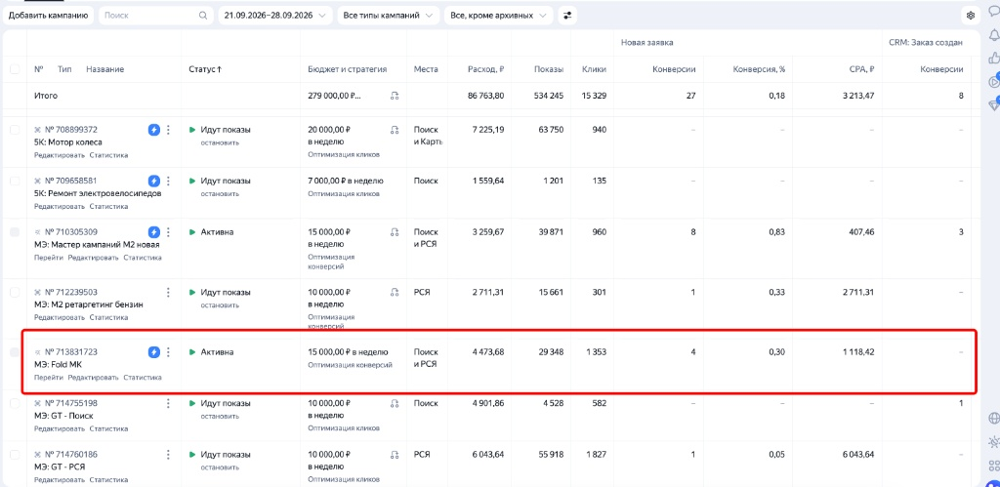
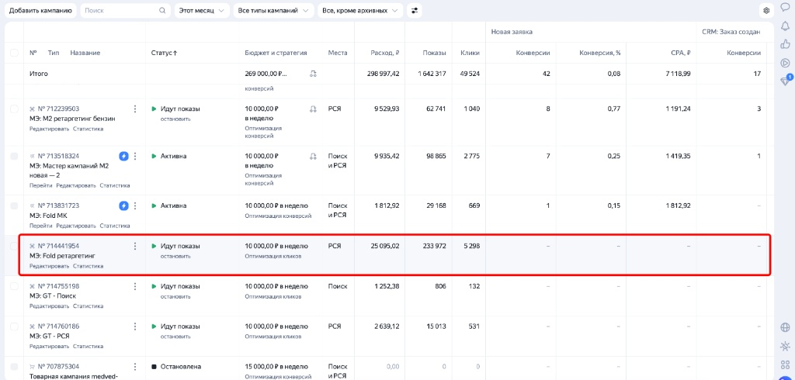
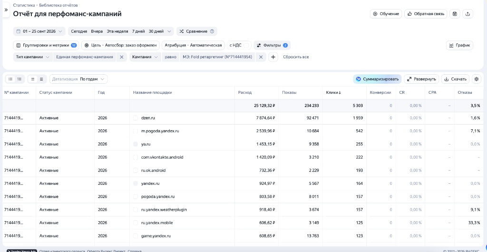
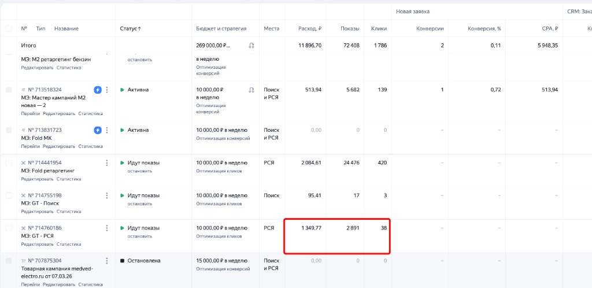
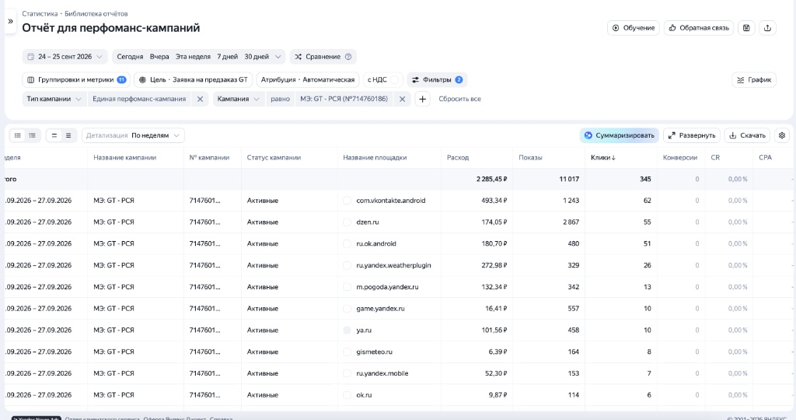
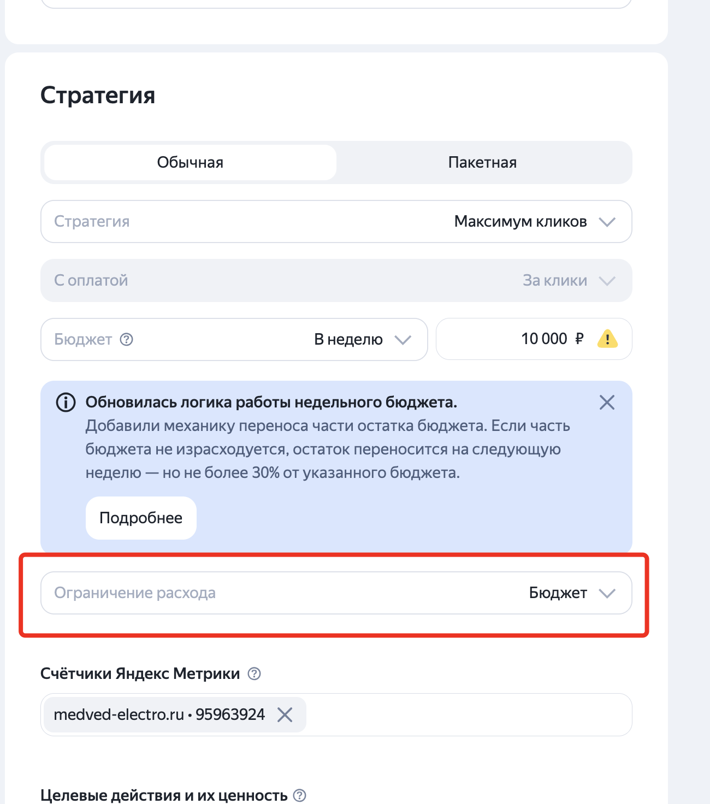
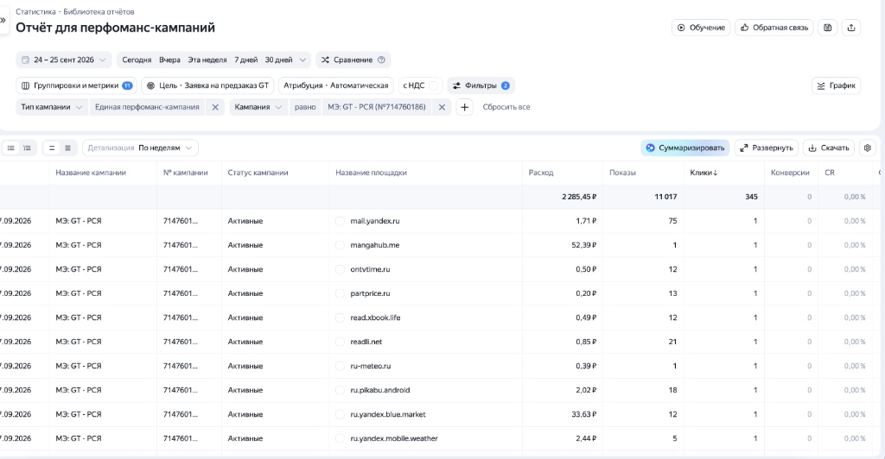
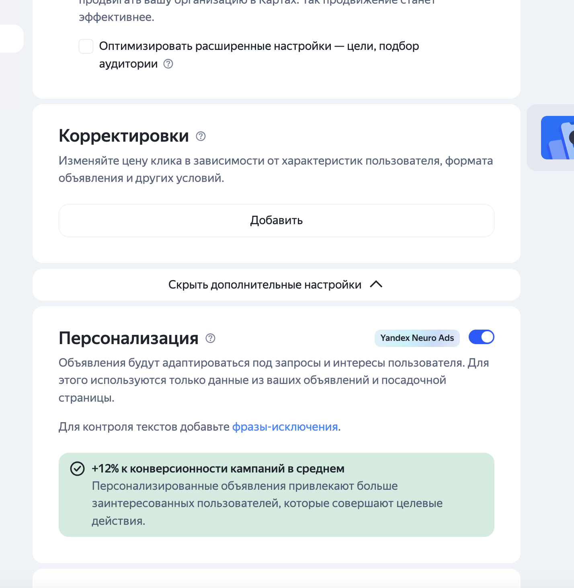
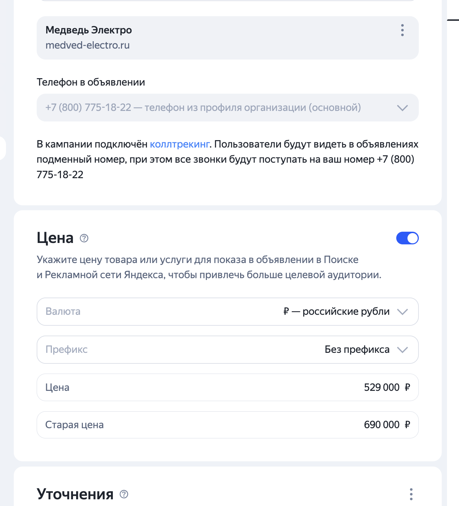

Странно. Школьники не покупали Медведей за 500.000 рублей. Разбираемся.
Инструменты & Стек
Яндекс Директ (Поиск, РСЯ, Мастер кампаний), Яндекс Метрика, Python (Pandas), Data Mining сырых Excel/CSV отчетов, CRM
Промежуточный результат первой недели
- Мусорный трафик в РСЯ
- Менее 10%
- До оптимизации — около 85% слива
- Fold / Мастер кампаний
- 4 заявки · CPA 1 118 ₽
- На старте — 0 показов из-за ошибки в цели
- М2 / Мастер кампаний
- 8 заявок · CPA 407 ₽
- 3 заказа успешно созданы в CRM
- Флагман GT / Поиск
- Заказ в CRM
- При расходе < 5 000 ₽ на байк за 529 000 ₽

Контекст проекта
«Медведь Электро» проектирует и собирает премиальные электровелосипеды: флагманские карбоновые «Медведь GT» с чеком до 690 000 ₽ (по предзаказу от 529 000 ₽), складные городские «Fold» и горные «М2». Для техники с таким чеком дешёвый клик сам по себе ничего не значит — необходим квалифицированный лид (SQL), который заходит в воронку продаж и доходит до статуса «Заказ создан» в CRM.
Задача на этом этапе: экстренно остановить слив бюджета, очистить трафик от фрода и мобильного мусора, реанимировать зависшие автостратегии Яндекса и выстроить прозрачный поток квалифицированных обращений.
Точка А: наследие предыдущего подрядчика (слив в клики, а не в заявки)
Проект достался в состоянии масштабного нецелевого сжигания бюджета. Все кампании настраивались по устаревшей логике скупки дешёвого трафика без оглядки на юнит-экономику:
- Провальный ретаргетинг Fold: 25 318 ₽ чистого расхода, 5 329 кликов и ровно 0 заявок. Кампания работала на стратегии «Оптимизация кликов». Робот скупал самый неликвидный инвентарь интернета, где пользователи чаще всего случайно задевали экран пальцем.
- Аномальные 234 000 показов: ретаргетинг на складной байк физически не может иметь такую аудиторию. Специалист включил автоматическое расширение таргетинга (look-alike) и сегмент «все посетители за 540 дней», превратив ретаргетинг в неуправляемую холодную помойку.
- Слив на погодные виджеты и чистилки: более 4 260 ₽ улетело на пользователей, которые просто смотрели прогноз погоды (
m.pogoda.yandex.ru,ru.yandex.weatherplugin). А баннеры байка за полмиллиона крутились во встроенной китайской утилите очистки памяти Xiaomi (com.miui.cleaner), приложении Едадил и детском пасьянсе Маджонг. - Мёртвый Мастер кампаний Fold: стоял с нулевыми показами. Подрядчик задал автостратегии нереалистичную цель — 50 ₽ за лид. С таким ограничением алгоритм даже не участвовал в аукционах.
- Техническая маскировка отказов: красивые «3,5% отказов» в отчётах были самообманом — счётчик Метрики ловил микрособытия на первом экране, создавая иллюзию качественного трафика.


com.miui.cleaner) и играх.
Этап 1. Очистка РСЯ и Data Mining через Python
После тестового пуска РСЯ по флагману GT мгновенно сработала тревога: пока Поиск потратил аккуратные 95 ₽ (3 целевых клика), РСЯ за несколько часов сожгла 1 349,77 ₽ (38 кликов), практически выбрав дневной лимит бюджета.

Детальный аудит сырого среза вскрыл абсурдные списания: сайт с готовыми домашними заданиями для школьников gdz-raketa.ru списал 156,82 ₽ за 3 клика (по 52 ₽ за клик!). Дети списывали алгебру и случайно кликали по баннеру электробайка за полмиллиона. Портал комиксов манги mangahub.me забрал 52,39 ₽ за 1 клик, а мобильные головоломки вроде com.loop.clear.cube списывали по 35 ₽.


Вручную просматривать тысячи строк в медленном веб-интерфейсе Директа неэффективно. Мы выгрузили полную статистику Мастера Отчётов в Excel/CSV и автоматизировали чистку через Python-скрипты:
import pandas as pd
import re
# Загрузка и парсинг многоуровневого отчёта по площадкам
df = pd.read_excel('2026-09-28_medved-electro-new.xlsx', sheet_name='Sheet0', skiprows=5)
# Правила выявления фрода и случайных кликов
junk_patterns = r'(?:com\.|game\.|puzzle|cleaner|weather|gdz|dsp-|manga|solitaire|tanks)'
junk_mask = (
(df['Площадка'].str.contains(junk_patterns, case=False, na=False)) |
((df['Отказы, %'] > 80) & (df['Клики'] >= 3)) |
((df['Расход, ₽'] > 100) & (df['Конверсии'] == 0) & (df['Глубина'] < 1.3))
)
# Формирование чистого блек-листа для импорта в Директ
blacklist = df[junk_mask]['Площадка'].dropna().unique()
with open('banned_platforms.txt', 'w') as f:
f.write('\n'.join(blacklist))
print(f"Сформирован блек-лист из {len(blacklist)} источников")Скрипт объединил свыше 1 500 площадок, отфильтровал DSP-сети, игровые приложения и сайты домашних заданий, сформировав чёрный список из более 240 источников для пакетной загрузки в запрет показов кампании.

Результат чистки: доля мусорного трафика в сетях упала с 85% до менее 10%. РСЯ перестала прожигать бюджет и вышла на стабильное обучение, принеся первую заявку при расходе 6 043 ₽.
Этап 2. Остановка старого ретаргетинга и сбор чистой базы
Старую кампанию «Fold - Ретаргетинг» остановили полностью: переобучать алгоритм на статистике с 5 300 случайных кликов из погодников было бессмысленно и дороже, чем собрать структуру с нуля.
Для следующего этапа разработали узкий сценарий: собирать в сегмент только тех пользователей, кто провёл на странице модели Fold более 45 секунд либо открывал галерею комплектаций. Из аудитории сразу исключили отказников и клиентов, которые уже оставили контакт в CRM. Стратегия — строгий «Максимум конверсий» с оплатой за целевые действия.
Этап 3. Реанимация Мастера Кампаний Fold
Главная причина простоя кампании Fold МК крылась в параметрах автостратегии: предыдущий директолог установил желаемую цену конверсии в 50 ₽. Для рынка электротранспорта с чеком от 150 000 ₽ алгоритм физически не мог найти пользователей по такой стоимости и не вступал в аукцион.
Мы заменили микроцели на реальную макроконверсию «Новая заявка» и подняли ориентир стоимости до 1 000 ₽. Кампания получила необходимый воздух для разгона и мгновенно вышла на рабочий темп.
Итог первой недели: 4 целевые заявки с CPA 1 118,42 ₽ при расходе 4 473 ₽ и 1 353 кликах. Автостратегия отработала практически 1-в-1 по целевому ориентиру и перешла в стабильную фазу генерации лидов.
Этап 4. Поиск по флагману GT: ценовой барьер в объявлении
Для электробайка с чеком до 690 000 ₽ ключевой риск на Поиске — скупка дорогих кликов от людей, которые ищут дешёвые китайские аналоги или не понимают реальной стоимости кастомного карбонового байка.
Чтобы защитить бюджет от нецелевых переходов, внедрили двухуровневую фильтрацию:
- Жёсткая отсечка по возрасту: в корректировках ставок полностью исключили аудиторию младше 18 лет (-100%).
- Ценовой фильтр прямо в объявлении: заполнили блок «Цена» — указали актуальную стоимость предзаказа (529 000 ₽) и зачёркнутую старую цену (690 000 ₽). Человек видел порог входа ещё до совершения клика, что отсекало случайный интерес без траты рекламных денег.


Эффект: CTR на Поиске удержался на высоком уровне 16–20%. При общем расходе всего в 4 901 ₽ кампания принесла первый квалифицированный лид (SQL), зафиксированный в статусе «Заказ создан» в CRM.
Сводные данные: что изменилось за первую неделю
| Кампания / Направление | До оптимизации (Точка А) | После оптимизации (Точка Б) |
|---|---|---|
| Мусорный трафик в РСЯ | Около 85%: игры, погодные информеры, утилиты Xiaomi, сайты ГДЗ | Менее 10%: трафик с Дзена, ВК и тематических порталов после загрузки блек-листа из 240+ площадок |
| Ретаргетинг Fold | 25 318 ₽ расхода, 5 329 кликов, 0 заявок (слив на мобильный мусор) | Кампания остановлена, бюджет спасён, спроектирован узкий сегмент от 45 сек на карточке |
| Мастер кампаний Fold | 0 показов и 0 заявок (заблокирован целью 50 ₽) | 4 целевые заявки, CPA 1 118,42 ₽ при расходе 4 473 ₽ (цель «Новая заявка» 1 000 ₽) |
| Мастер кампаний М2 | Нестабильный поток с хаотичной стоимостью | 8 целевых заявок по 407,77 ₽ (расход 3 262 ₽) → 3 заказа созданы в CRM |
| Поиск по флагману GT | Спорадические дорогие клики без понимания аудиторией цены | Квалифицированный лид и заказ в CRM при расходе 4 901 ₽ на байк за 529k–690k ₽ |
| Конверсия из клика в лид (CR) | Менее 0,08% (чистый кликфрод) | Стабилизировалась в коридоре 0,3% – 0,8% |
Почему смотрим в CRM, а не только на цену клика
Для товаров со средним чеком от 200 000 до 690 000 ₽ оптимизация рекламы по стоимости клика или даже по цене «сырого» лида губительна. Главный ориентир — движение заявки по этапам CRM.
По линейке М2 восемь заявок с Мастера кампаний дали три подтверждённых заказа в CRM. Стоимость доведения потенциального клиента до этапа «Заказ создан» составила около 1 086 ₽. По флагману GT получен первый квалифицированный заказ с чеком свыше 500 000 ₽ при рекламном расходе менее 5 000 ₽.
Это промежуточные результаты первой недели разгона. Созданный заказ в CRM не равен факту оплаты на расчётный счёт, поэтому финальные выводы о выручке и ROMI мы сделаем после завершения цикла сделки (2–4 недели) и настройки сквозной аналитики.
Следующие шаги и статус
- Окно стабильности (48–72 часа): не вносить резких правок в обученные кампании («GT - Поиск», «GT - РСЯ», «Fold МК»), чтобы алгоритмы Яндекса закрепили профили конвертящих пользователей.
- Запуск обновлённого ретаргетинга: таргетинг строго на тёплую аудиторию сайта (время на странице от 45 секунд) с исключением базы CRM.
- Масштабирование М2: плавное увеличение недельного бюджета связки с контролем нагрузки на менеджеров по продажам.
- Сквозная аналитика: сопоставление ID визитов Яндекс Метрики с фактическими оплатами в CRM для вычисления точного ДРР и ROMI.
Главный вывод
В премиальном сегменте побеждает не «накрутка кликов», а гигиена данных. Сначала нужно отсечь мусорные площадки и дать алгоритмам честную макроконверсию, а затем — оценивать контекстную рекламу не по цене перехода, а по реальному движению сделок в CRM.
Кейс отражает первую неделю активных антикризисных работ по Яндекс Директу. Оптимизация продолжается: связки масштабируются, а сквозная аналитика доводится до финальной отгрузки байков.